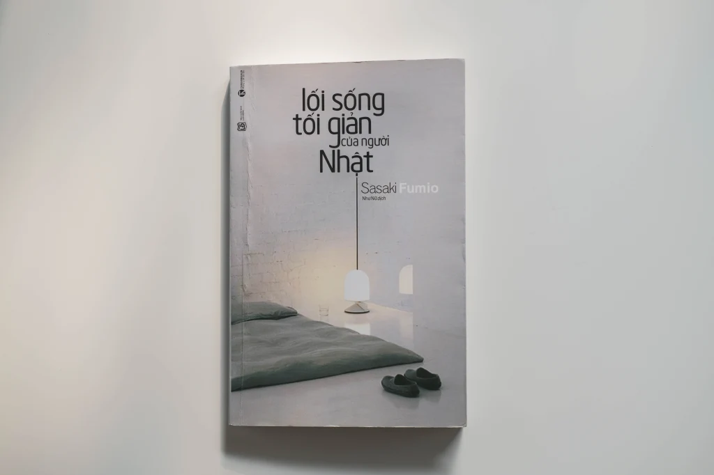

ĐỌC LẠI CUỐN SÁCH “LỐI SỐNG TỐI GIẢN CỦA NGƯỜI NHẬT”

Lối sống tối giản của người Nhật – Sasaki Fumio.
Hai năm trước, cuốn sách này đã thay đổi cuộc đời mình. Lần đầu tiên trong đời, mình biết đến lối sống tối giản, biết đến khái niệm “minimalism”. Kể từ đó, mình quyết tâm trở thành một minimalist, và bắt đầu trải nghiệm một cuộc sống mới mẻ với phương châm “less is more”.
Thời điểm này đánh dấu cột mốc tròn 2 năm mình theo đuổi lối sống tối giản. Và bất chợt mình nhớ lại đến cuốn sách đó. Trong kí ức của mình, đây là một cuốn sách rất “kích thích”, và nó chắn hẳn phải rất hấp dẫn đến mức khiến mình phải thay đổi hoàn toàn lối sống lúc đó. Nhưng mình không nhớ rõ từng nội dung và chi tiết cụ thể trong cuốn sách. Vì vậy mình nghĩ đây là thời điểm phù hợp để đọc lại, để suy ngẫm về nội dung cuốn sách dưới góc nhìn của một minimalist, chứ không phải là của một người chưa biết gì về lối sống tối giản giống như mình cách đây 2 năm.
Biết đâu suy nghĩ của mình về cuốn sách này khác hoàn toàn so với 2 năm trước? Biết đâu, mình lại thấy không thích nội dung cuốn sách? Vì vậy, trước khi đọc lại, mình đã nghĩ trong đầu về ấn tượng hiện tại của mình đối với cuốn sách này.
“Hmm. Như mình nhớ thì sách nói về 55 quy tắc vứt bỏ. Sách cũng có viết về tư duy tối giản ở mặt phi vật chất nhưng dường như nó không quá đặc sắc. Giọng văn của Sasaki rất thẳng thắn, có phần khá phiến diện thì phải. Nói chung là mình chỉ nhớ là mình bị kích thích bởi cụm từ vứt bỏ thôi”.
À, mình muốn nói rằng đây là bài mình viết dành cho chính bản thân mình. Mình vừa viết vừa suy ngẫm về cuốn sách dưới lập trường của một minimalist, thế nên nó rất dài, mà bố cục nó khá là rối rắm, có lẽ những bạn mới biết đến LSTG sẽ cảm thấy khó hiểu khi đọc bài viết này. Mình xin lỗi các bạn và mong các bạn thông cảm nhé!
Tiêu đề cuốn sách
Có một điều khiến mình phải suy nghĩ trước khi mở cuốn sách ra, đó chính là cái tiêu đề. Tại sao mình lại để ý kĩ về tiêu đề như vậy? Đó là bởi vì nó khác hẳn so với tiêu đề gốc tiếng Nhật, “ぼくたちに、もうモノは必要ない”, dịch đúng nghĩa đen thì sẽ là “Chúng ta không còn cần đồ đạc nữa”. Bản dịch tiếng Anh có tiêu đề dịch khá sát nghĩa, “Goodbye, things”. Vậy tại sao bản dịch tiếng Việt lại là “Lối sống tối giản của người Nhật”?
Công nhận là rất khó để có thể dịch tiêu đề gốc sang tiếng Việt sao cho nó vừa ngắn gọn, tối giản nhưng vẫn gây ấn tượng. “Chúng ta không còn cần đồ đạc nữa”, hay là “Tạm biệt đồ đạc”, nghe nó khá là “chuối”, thú thật là nghe nó không xuôi tai cho lắm. Vậy, bạn Như Nữ dịch thành “Lối sống tối giản của người Nhật” liệu có phù hợp không?
Câu hỏi ở đây đó là: Có phải người Nhật nào cũng sống tối giản hệt như cách mà Sasaki Fumio sống?
Mình đã tự tìm hiểu cách người Nhật chia sẻ về LSTG trên mạng, và thấy xu hướng sống tối giản của họ phần nào khá giống với Sasaki Fumio. Họ chia sẻ một cách rất thẳng thắn và đơn giản. Những bức ảnh căn phòng ít đồ, với tông màu chủ đạo là màu trắng, kèm theo đó là những cảm nhận về cuộc sống tối giản ít đồ đạc. Họ không nói quá nhiều đến tối giản tâm trí hay mấy thứ phi vật chất, chỉ đơn thuần là sống ít đồ đạc đem lại cho họ hạnh phúc. Vì thế, bạn Như Nữ dịch như thế này, theo mình là hợp lý.
Lời mở đầu
“Đồ đạc ít, hạnh phúc nhiều. Chính vì vậy, chúng ta không còn cần đồ đạc nữa”.
Sasaki Fumio của ngày xưa là một con người sống bừa bộn và hay so sánh bản thân với người khác. Nhưng kể từ khi sống ít đồ đạc thì tác giả đã tìm thấy được hạnh phúc thực sự. Thêm vào đó là một câu nói mang tính chất cá nhân:
“Hầu hết con người ta không hiểu biết gì về hạnh phúc”.
Chỉ cần đọc lời mở đầu, bạn sẽ biết được văn phong của tác giả, đó là một cách viết khá đơn giản, đúng kiểu “tôi nghĩ như thế nào thì viết như thế, còn đồng ý hay không là tuỳ mỗi người”.
Chắc hẳn đọc đến đây sẽ có nhiều người nghĩ rằng, “hạnh phúc của mỗi người khác nhau, không thể quy hết về việc vứt đồ được. Đây hoàn toàn là một suy nghĩ mang tính cá nhân và không có cơ sở”.
Ngày xưa mình đọc, thú thật là mình không quá để tâm đến cụm từ “hạnh phúc”, mà chỉ chăm chăm nghĩ đến chuyện vứt đồ và theo đuổi một lối sống mới thôi. Bởi hạnh phúc là một điều gì đó rất mơ hồ, và lại lúc đó mình có phải là một minimalist đâu mà hiểu được hạnh phúc của những người sống tối giản là như thế nào.
Còn bây giờ, khi đã là một minimalist, thì mình lại hiểu rõ được rằng chính từ việc vứt đồ đã giúp mình tìm thấy được hạnh phúc thực sự, đó là sự quý trọng những điều giản dị trong cuộc sống. Những ai theo dõi blog mình từ đầu, chắc chắn các bạn sẽ cảm nhận thấy điều đó. Không phải vứt đồ xong là bạn cảm thấy hạnh phúc ngay. Vứt bỏ đồ đạc chỉ là một trong những hành động cụ thể của một người sống tối giản, nhưng chính hành động đó lại giúp chúng ta xây dựng được một tư duy ưu tiên và lựa chọn những điều quan trọng, và đến một lúc nó sẽ giúp ta lựa chọn và ưu tiên được cuộc sống hiện tại, và chính lúc đó, chúng ta sẽ cảm nhận được hạnh phúc thực sự.
Nếu những ai không suy nghĩ kĩ về điều này, thì hẳn sẽ cảm thấy câu nói “nhiều đồ đạc không hạnh phúc, nên nếu ít đồ đạc sẽ hạnh phúc” nó rất là khó ưa. Nhưng phải đọc đến chương cuối cùng (chương 5), có lẽ bạn sẽ hiểu rõ hơn về hạnh phúc mà Sasaki muốn nói tới.
Đó, chỉ cần đọc lại mỗi lời mở đầu thôi mà mình đã suy ngẫm được rất nhiều điều. Thế mới thấy, đọc lại một cuốn sách nó vẫn luôn đem lại cho ta một cảm giác rất mới mẻ.
Như thế nào là người sống tối giản?
Trên thực tế, không có tiêu chuẩn nào cho người sống tối giản cả. Đây chính là thứ mình muốn nhấn mạnh. Thêm vào đó, lối sống tối giản không phải là mục đích, mà là một phương tiện giúp ta nhận rõ đâu mới là điều quan trọng thực sự trong cuộc sống. Ngày xưa lúc đọc, có lẽ mình đã chưa hiểu rõ được phần này. Lúc đó mục tiêu của mình là vứt bỏ đồ đạc để trở thành một minimalist. Nhưng một khi đã trở thành một minimalist, thì mình dần nhận thấy đây giống như là một sự khởi đầu hơn là kết thúc.
Lối sống tối giản đối với mình nó giống như một nền tảng, một tiền đề giúp bản thân hướng tới một cuộc sống mới ý nghĩa hơn. Tại sao mình không còn đăng nhiều bài về minimalism như thời gian đầu mới viết blog? Đó là bởi vì tâm trí mình giờ đây đã được lấp đầy bởi những điều tích cực, bởi những việc làm có ý nghĩa, bởi những đam mê mà mình bắt đầu kể từ khi sống tối giản, và mình mong muốn được chia sẻ những điều đó trên mảng blog của mình.
Kích thích – Quen thuộc – Chán nản
Trong chương 2, Sasaki có giải thích vì sao chúng ta lại luôn muốn những thứ mới mẻ. Tác giả nêu ra lí do nhìn góc độ thần kinh học, cho rằng hệ thần kinh con người là cơ cấu tìm ra sự thay đổi giữa các kích thích. Bạn cảm thấy kích thích với món đồ mới, bạn mua về, sử dụng 1 thời gian thì dẫn đến cảm giác quen thuộc, hiển nhiên và cuối cùng là chán nản, thế nên bạn muốn tìm kiếm sự kích thích mới, bằng cách đi mua sắm.
Có hai vấn đề ở đây: thứ nhất, đây có phải là một kết quả của nghiên cứu khoa học? Hay chỉ là suy đoán mang tính cá nhân được đúc kết từ chính kinh nghiệm của tác giả? Mặc dù nghe nó rất hợp lý, nhưng đối với mình thì dường như hơi thiếu thuyết phục. Thứ hai, nói như Sasaki thì thì trở thành minimalist tức là sẽ làm thay đổi kết cấu của hệ thần kinh, tức là khiến hệ thần kinh đánh mất đi cái chu trình kích thích – quen thuộc – chán nản đối với những thứ xung quanh? Sẽ là thật tuyệt nếu Sasaki viết cụ thể hơn về hệ thần kinh của một người sau khi đã trở thành một minimalist.
Thực ra nếu đọc ở phần sau thì sẽ có đoạn tác giả viết rằng, đối với một người sống tối giản thì họ vẫn cảm nhận được sự kích thích từ chính việc vứt đồ, và gọi đây là một căn bệnh. Vậy tức là cơ cấu hệ thần kinh sẽ không đánh mất đi cái chu trình kia, nhưng sự kích thích giờ đây đã được chuyển sang một “thể” mới, từ mua đồ sang vứt đồ. Nghe có vẻ hợp lý đấy.
Chương 2 – lan man quá…
Mình đọc lại chương 2 và thấy phần này khá… lan man. Từ Honda đến Bill Gates, nó khiến mạch đọc của mình có phần bị ngắt lại. Phải đến khi đọc được phần “tóm lại” của tác giả từ trang 60 thì mình mới tập trung lại được. Có lẽ hồi xưa mình cũng thấy nó lan man nên đã đọc lướt qua, đó là lí do vì sao mình không nhớ mấy về nội dung chương này.
Ở chương 2 này mình thấy phần tác giả viết về giá trị bản thân cũng khá hay và đáng để suy ngẫm. Nhưng một lần nữa, Sasaki lại bắt đầu với những câu chuyện hơi lạc chút đề như đồ đá, đồ gốm, nỗi cô đơn của chó mèo, tự sát,… Thật ra nó đều có mối liên kết, nhưng vì tác giả lại viết kết luận ở phần sau, thế nên nó sẽ khiến người đọc cảm thấy bị lan man một chút. Nếu muốn nắm ý chính của chương 2 này, có lẽ bạn chỉ cần đọc đúng trang 60, 61, 62, 78, 79, 80, và thêm cả phần đầu chương từ trang 44 đến 50.
55 quy tắc vứt bỏ
Nói về 55 quy tắc vứt bỏ (kèm thêm 15 quy tắc “nâng cao” thì mình cũng không có comment gì mấy. Đây là chương mình đọc kĩ nhất 2 năm trước, bởi lúc đó cái mình mong muốn đó là một phương pháp thực tế mà mình có thể áp dụng ngay lập tức mà không phải suy nghĩ nhiều.
Ở đây có một vài quy tắc mình thấy nó cũng khá là “dị”, đúng chất extreme minimalist, ví dụ như quy tắc 32: phố phường chính là phòng khách nhà bạn. Đại khái là tác giả vứt hết mấy bộ bát đũa thừa, và nếu có dịp mời bạn bè đến nhà ăn thì tác giả sẽ rủ ra quán ăn nào đó gần nhà. Mình lại có suy nghĩ hoàn toàn khác với Sasaki Fumio. Từ hồi sống tối giản thì căn phòng mình trở nên gọn gàng hơn bao giờ hết, và điều này lại càng giúp mình có cơ hội để mời các bạn đến nhà chơi và ăn uống, bởi một phần mình cũng muốn “khoe” chiến tích dọn phòng, và thêm vào đó cái cảm giác mời bạn bè về nhà ăn nó vẫn có ý nghĩa hơn rất nhiều so với việc suốt ngày đi ăn ở ngoài.
Ở trong 15 quy tắc bổ sung là nơi mình thấy có những đoạn viết rất hay, rất ngắn gọn súc tích mà lại chỉ ra đúng bản chất của lối sống tối giản, đặc biệt là quy tắc 13 và 14.
Quy tắc 13: muốn vứt đồ, muốn giữ đồ cũng là những căn bệnh giống nhau. Nếu như việc mua sắm chính là hành động để kích thích bộ não, thì đối với người sống tối giản, việc vứt bỏ đi cũng là một hành động kích thích bộ não. Điều này mình cũng đã viết ở phần phía trên.
Quy tắc 14: Lối sống tối giản là phương tiện, là lời mở đầu. Phải đến khi bạn bắt đầu theo đuổi lối sống tối giản thì mới cảm nhận rõ được quy tắc này. Đọc đoạn này mà đầu mình cứ gật gật liên tục. Dưới góc nhìn của một minimalist thì những đoạn này mình không thể không đồng ý với suy nghĩ của tác giả.
Vứt bớt đồ đạc, 12 điều thay đổi trong tôi
Chương 4 có lẽ là chương mình tận hưởng nhất trong lần đọc này, bởi những thay đổi bản thân mình cảm nhận được cũng gần như y xì đúc những gì tác giả đã viết. Những thay đổi đó bao gồm: có thời gian, cảm thấy tự do hơn, tận hưởng và trân trọng cuộc sống hơn, và đặc biệt là không so sánh với người khác.
“Nếu trở thành một người sống tối giản, biết bản thân cần gì, thì bạn sẽ không tập trung vào một ai đó để so sánh mà chỉ chú ý vào bản thân mình thôi”.
Từ khi sống tối giản, có hai sự thay đổi rõ rệt về mặt tâm lý: mình không còn tự ti với cơ thể bản thân do bị bệnh tật dày vò, và mình rất thích được đi khám phá, cafe một mình. Bởi mình không còn sợ việc người khác đánh giá mình như thế nào.
Người sống tối giản luôn tích cực. Oh Yes! Mình không biết những minimalist khác như thế nào, nhưng mình thì vẫn lạc quan lắm. Các bạn đọc blog và xem youtube của mình là biết.
Và có một câu rất thú vị khiến mình phải phì cười ngay lập tức. “Người sống tối giản là người gầy”. Cách lí giải của tác giả ở đây, một lần nữa tuy không có dẫn chứng khoa học gì cả, nhưng nó cũng rất hợp lý và thuyết phục. Sống tối giản đồng nghĩa với việc bạn bớt lo lắng hơn, và nhờ thế mà bạn cũng ăn ít hơn. Thế nên bạn nào đang muốn giảm cân thì hãy thử sống tối giản vài năm nhé biết đâu lại trở nên thon thả. Mình đùa tí.
Hạnh phúc
Chương cuối cùng của cuốn sách viết về hạnh phúc. Hạnh phúc đối với Sasaki Fumio, được giải thích như sau:
“Hạnh phúc không phải là thứ bạn có được sau khi đáp ứng một vài điều kiện. Hạnh phúc chỉ là cảm nhận trong khoảnh khắc hiện tại mà thôi”.
Đúng là phải sống tối giản một thời gian, mình mới có thể hiểu được rõ lời giải thích của tác giả. Mình nhớ đến hôm mùng 08.03, mình có làm cho mẹ một bữa cơm trưa, và mẹ mình có nói “Shiawase!” (Hạnh phúc quá đi!). Câu nói đó cũng đã làm mình cảm thấy hạnh phúc. Dù nó chỉ diễn ra trong một khoảnh khắc rất ngắn, nhưng những cảm nhận về khoảnh khắc đó vẫn sẽ còn lưu giữ mãi trong tâm trí mình. Và hãy thử tưởng tượng, ngày nào bạn cũng tìm kiếm và cảm nhận được những niềm vui, hạnh phúc nho nhỏ như thế, chắc chắn nó sẽ tuyệt hơn là việc bạn “trở nên” hạnh phúc sau những lần đi mua sắm.
Thật tuyệt khi được đọc lại một lần nữa
Mình không ngờ rằng ấn tượng mình dành cho Sasaki Fumio lại sai lệch như vậy. Với một giọng văn thẳng thắn và rõ ràng, mình cứ có cảm giác như cuốn sách này nó không khác gì một “cú đấm” vào mặt người khác. Những ai đang trải qua một thời gian khó khăn với cuộc sống hoặc là chỉ đơn giản gặp chút khó khăn trong việc vứt bỏ đồ đạc, thì cuốn sách là một liều doping siêu mạnh. Còn nếu ai vẫn đang cảm thấy mãn nguyện với một cuộc sống hạnh phúc với đồ đạc thì đây lại không khác gì một cuốn sách của một anti-consumerism.
Nhưng, phải đọc lại thì mới biết được rằng, Sasaki Fumio là một người có tư duy rất sâu sắc và đúng đắn về lối sống tối giản. Những người chưa biết đến lối sống này, hoặc sẽ cảm thấy hứng thú với một lối sống ít đồ đạc, hoặc sẽ phủ nhận hoàn toàn những quan điểm của Sasaki. Nhưng dưới góc độ của một minimalist, mình lại có được một cái nhìn sâu hơn về những gì tác giả đã viết, đặc biệt là về mối quan hệ giữa tối giản và hạnh phúc.
Thật tuyệt khi được đọc lại một lần nữa.
Thank you, Sasaki san.


COMMENT
Tarobam 1 ngày trước
Ah the memories of watching Shelter for the first time, and now to re-live the feeling with Hiyumi singing it.
Justin Y. 1 ngày trước
Imagine traveling back decades and explaining to him that in the future, hundreds of thousands of people will be listening to his song on a supercomputer with a picture of a Japanese cartoon.
DigiNeko 2 ngày trước
Classic Masterpiece.